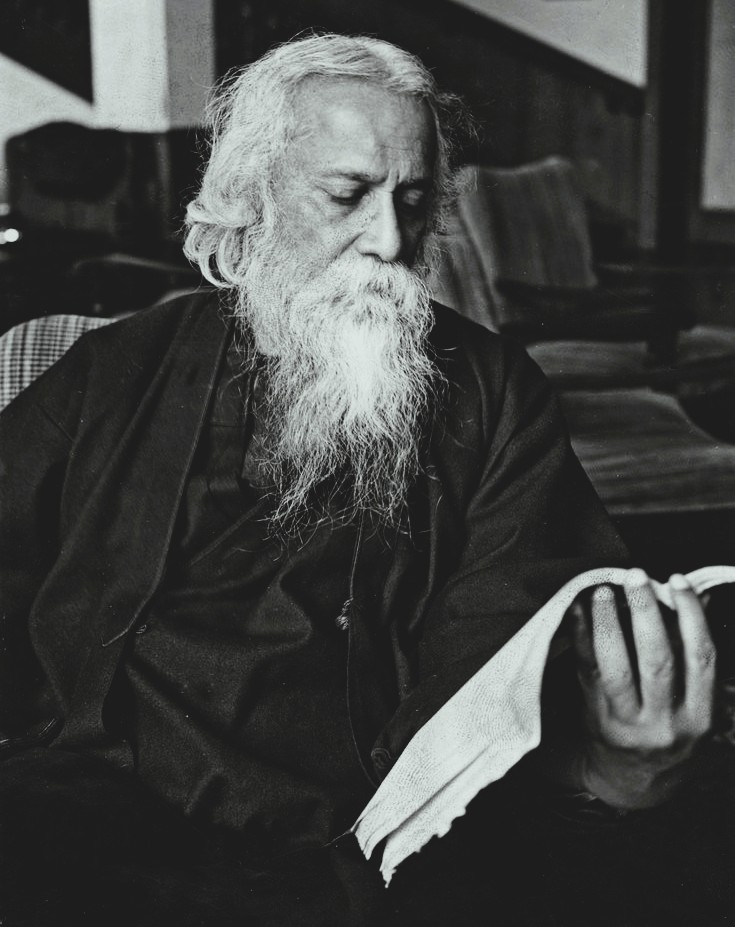

Who Was Rabindranath Tagore?
Rabindranath Tagore was a Bengali poet, philosopher, musician, artist, and educator who lived from 1861 to 1941. He is remembered as one of the most influential humanist thinkers of modern India, and as the first non-European to receive the Nobel Prize in Literature, awarded in 1913 for his collection of devotional poems, Gitanjali.
Tagore is especially associated with a philosophy that treats spirituality, art, and human relationship as inseparable from one another, most fully articulated in what he called the Religion of Man. Rather than locating the divine primarily in fixed doctrine or formal ritual, Tagore's philosophy holds that ultimate reality is most fully realized through creative expression, love, and genuine human connection, treating the sacred and the human as continuous with one another rather than sharply separated.
Born into a prominent Bengali family closely associated with the reformist Brahmo Samaj movement, Tagore developed an unusually wide-ranging body of work spanning poetry, fiction, drama, music, painting, and philosophical essay, while also founding an experimental center of learning at Santiniketan that grew into the university now known as Visva-Bharati, embodying his distinctive educational philosophy in institutional form.
Because Tagore expressed much of his philosophy through poetry, lecture, and creative work rather than a single systematic treatise, scholars continue to debate how best to organize and categorize his wide-ranging thought within the history of philosophy. His importance nonetheless remains considerable, since his humanist vision, his critique of narrow nationalism, and his distinctive approach to education continue to shape discussions of philosophy, culture, and pedagogy well beyond the borders of India.
Rabindranath Tagore: Quick Facts
- Name — Rabindranath Tagore (Gurudev)
- Period — 1861–1941
- Born in — Kolkata (Calcutta), Bengal, India
- Philosophical period — Modern Indian philosophy and the Bengal Renaissance
- Associated with — Humanism and the Religion of Man
- Known for — Gitanjali, his critique of nationalism, and founding Visva-Bharati University
- Major works — Gitanjali, Sadhana, Nationalism, and The Religion of Man
- Major honor — Nobel Prize in Literature, 1913
- Founded — Santiniketan and Visva-Bharati University
- Historical importance — Leading humanist philosopher and cultural figure of modern India
Tagore and the Bengal Renaissance

Tagore's intellectual formation took place amid the Bengal Renaissance, a period of vigorous social, religious, and cultural reform in nineteenth-century Bengal that brought traditional Hindu thought into sustained dialogue with European philosophy, science, and literature, producing a generation of reformers determined to renew Indian society from within rather than simply imitating or rejecting the West wholesale.
Central to this environment was the Brahmo Samaj, a monotheistic reform movement within Hinduism founded earlier in the century, which rejected idol worship and rigid caste distinctions in favor of a more universal, ethically oriented spirituality grounded in the Upanishads. Tagore's own family was deeply involved in this movement, and its emphasis on inward, ethical religion rather than external ritual shaped his thinking from an early age.
Tagore also came of age during a period of increasing political agitation against British colonial rule, including the 1905 partition of Bengal, which provoked widespread protest and exposed Tagore directly to the emerging currents of Indian nationalist politics, an experience that would later inform his own complicated and often critical relationship with nationalist ideology.
In the intellectual environment associated with Tagore, philosophical reflection therefore combined religious reform, literary and artistic innovation, and political engagement, treating none of these domains as separate from the others but instead approaching them as different expressions of a single, integrated vision of human flourishing.
Who Was Rabindranath Tagore and What Did He Do?
Tagore was born in Kolkata into the prominent and culturally influential Tagore family of Jorasanko, a household deeply engaged with literature, music, religious reform, and public affairs. Largely dissatisfied with formal schooling, Tagore was educated substantially at home, developing an early and lasting love of poetry, music, and the natural world that would remain central to his mature philosophy.
As a young man, Tagore began publishing poetry and prose in Bengali, rapidly establishing himself as a leading literary figure, while also managing his family's rural estates in Bengal, an experience that brought him into close daily contact with village life, agrarian hardship, and the natural landscape, all of which profoundly shaped both his social thought and his poetic imagination.
In 1901, Tagore founded an experimental school at Santiniketan, seeking to develop an alternative to what he regarded as the rigid, rote-based colonial education system, before achieving international recognition in 1913 when he became the first non-European awarded the Nobel Prize in Literature, largely on the strength of his own English translation of the devotional poems collected in Gitanjali.
Tagore's later decades combined extensive international travel and lecturing, sustained literary and artistic production across poetry, fiction, drama, music, and painting, and the expansion of his Santiniketan school into Visva-Bharati University, an institution he envisioned as a genuine meeting place between Indian and world civilization rather than a narrowly national or regional center of learning.
Tagore died in 1941, only a few years before India achieved independence, having produced an extraordinarily large and varied body of work and having become one of the most widely recognized cultural and philosophical figures of modern India, remembered with the honorific title Gurudev, meaning revered teacher.
What Did Rabindranath Tagore Believe?
Tagore's philosophy resists easy classification within a single established school, drawing simultaneously on the Upanishads and the ethical monotheism of the Brahmo Samaj, on his own extensive engagement with world literature and European philosophy, and on his lifelong practice as a working poet, musician, and visual artist.
At the center of this philosophy lies the conviction that ultimate reality is not a distant, impersonal absolute but is most fully encountered through relationship, including the relationship between one human being and another, between a person and the natural world, and between the individual soul and what Tagore called the Jivandevata, or the divine presence experienced within the intimate texture of one's own inner life.
Tagore consistently treats creative expression, particularly poetry, music, and art, as a genuine vehicle for spiritual and philosophical insight rather than as mere decoration or entertainment, arguing that the human impulse to create beauty reflects a fundamental joy at the heart of existence itself, a theme he returns to repeatedly across his poetic and philosophical writing.
This vision extends into Tagore's broader social and political thought, where he consistently resisted ideologies that reduce human beings to abstract categories, whether national, religious, or economic, insisting instead on the irreducible value of individual human relationship, creativity, and freedom as the proper foundation for any genuinely humane society.
Scholars of Indian philosophy continue to debate how closely Tagore's thought should be aligned with classical Vedanta, given his own selective and creatively reinterpreted use of Upanishadic ideas, but his work is consistently recognized as one of the most influential modern expressions of humanist philosophy to emerge from the Indian subcontinent.
Tagore on Freedom, Individuality, and the Self
Freedom occupies a central place in Tagore's philosophy, but he understood it in a broader sense than merely political independence or the absence of external restraint. Genuine freedom involved the development of the whole human personality: the capacity to think, create, love, and enter freely into meaningful relationships with other people and with the wider world.
Tagore was deeply concerned with the value of individuality. Although his thought draws upon Upanishadic ideas of spiritual unity, he did not treat the individual person as something that should simply disappear into an undifferentiated universal whole. Human uniqueness, personality, and creative distinctiveness were themselves valuable expressions of reality.
This created an important balance within his philosophy. Human beings are connected to one another and participate in a reality larger than the isolated ego, yet each person also possesses a unique individuality that cannot be reduced to a mere member of a nation, community, class, or religious group. The universal, in this sense, does not destroy the individual but finds expression through particular human lives.
Tagore therefore criticized both extreme individual isolation and collective conformity. A person who lives only for private self-interest fails to recognize the deeper bonds connecting human beings, while a society that suppresses individuality in the name of political, religious, or national unity destroys an essential source of human creativity and freedom.
His philosophy of freedom consequently connects many of his other major concerns. His criticism of nationalism, his educational experiments, his defense of artistic creativity, and his humanist spirituality all rest on the conviction that human personality must be allowed to grow freely while remaining open to an ever wider community of life.
The Religion of Man: Tagore's Humanist Philosophy
The Religion of Man, developed most systematically in Tagore's 1930 Hibbert Lectures at Oxford and later published under that title, presents his most sustained philosophical statement of the conviction that the infinite finds its most meaningful expression not in abstraction but through the finite, particular reality of human life and relationship.
Rather than treating religion as a set of doctrines to be accepted on authority, Tagore describes genuine spirituality as an ongoing, creative process of self-realization achieved through love, sympathy, and the cultivation of one's relationships with other people and with the natural world, treating these relationships themselves as the primary field in which the sacred becomes accessible to human experience.
Tagore draws heavily on the Upanishadic idea of an underlying unity between the individual self and universal reality, but he reinterprets this unity in distinctly humanist and personal terms, emphasizing the growth of human personality, sympathy, and creative freedom rather than the more austere, world-transcending liberation emphasized in some classical Vedanta commentary.
This philosophy allowed Tagore to affirm a genuinely universal spiritual vision that did not require allegiance to any single organized religion, presenting the deepest truths of human existence as accessible through sincere ethical and creative engagement with life rather than through exclusive doctrinal commitment to one particular religious tradition.
Later commentators have noted the close relationship between this philosophy and Tagore's own poetic practice, since much of his devotional poetry, including the poems collected in Gitanjali, directly enacts the very vision the Religion of Man describes philosophically, presenting encounters with ordinary human joy, love, and nature as themselves occasions of profound spiritual significance.
Dialogue, Difference, and the Search for Truth
Tagore's intellectual life was marked by an unusual willingness to enter into serious conversation with people whose philosophical, political, or cultural assumptions differed from his own. His thought developed through encounters between Indian and international traditions, between poetry and philosophy, and through public disagreements with contemporaries such as Gandhi.
This suggests an important principle within Tagore's wider humanism: human understanding grows through relationship. No individual, nation, or civilization possesses a complete monopoly on truth, and intellectual isolation can become as limiting as political or cultural isolation.
Dialogue, however, did not mean the abandonment of conviction. Tagore was capable of strong disagreement, particularly when he believed that nationalism, superstition, or mechanical social thinking threatened human freedom. Yet he generally preferred criticism and exchange to the demand for absolute ideological conformity.
His philosophy therefore offers a model of intellectual relationship in which difference does not necessarily produce hostility. Distinct perspectives can challenge and enlarge one another, provided that individuals remain open to communication and recognize the humanity of those with whom they disagree.
Tagore's Critique of Nationalism
Tagore's essays on nationalism, most notably his 1917 work simply titled Nationalism, present one of the most philosophically serious critiques of nationalist ideology produced anywhere in the early twentieth century, distinguishing him sharply from many of his political contemporaries.
Tagore argues that the modern nation, understood as a centralized, mechanically organized political and economic entity, differs fundamentally from a genuine human society bound together by shared culture, sympathy, and creative life, suggesting that the nation-state tends to subordinate these humane and cultural dimensions of collective life to narrower goals of power, competition, and material efficiency.
This critique applied not only to British imperialism but to nationalist movements more broadly, including currents within India's own independence movement, since Tagore worried that an uncritical embrace of nationalist ideology, even in the service of a just cause such as independence, risked reproducing the same dehumanizing and aggressive tendencies he identified in European nationalism and imperial competition.
Tagore's position provoked significant controversy and disagreement among Indian nationalists during his own lifetime, some of whom viewed his critique as insufficiently supportive of the immediate political struggle for independence, though Tagore consistently maintained that genuine freedom required more than a mere transfer of political power and needed to be grounded in cultural renewal, education, and international cooperation.
This philosophical position connects directly to Tagore's broader humanist vision, since his objection to nationalism rests fundamentally on the same conviction that animates the Religion of Man: that abstract collective categories, whether national or otherwise, should never be allowed to override the concrete, irreplaceable value of individual human relationship and creative life.
Tagore's Universalism and the Idea of World Humanity
Tagore's critique of nationalism was closely connected to a broader philosophy of universal human unity. He believed that human beings should not understand themselves primarily as isolated members of competing nations but as participants in a wider world of cultural, intellectual, and moral relationship.
This universalism did not mean that Tagore wanted all cultures to become identical. On the contrary, he valued the distinctive languages, traditions, and creative achievements of different peoples. The problem arose when attachment to one's own culture hardened into hostility toward others or when political power demanded cultural uniformity.
Tagore therefore sought a relationship between unity and diversity. Humanity could become more deeply united not by eliminating cultural difference but through communication, reciprocity, and the free exchange of knowledge, art, and experience across national boundaries.
His educational project at Visva-Bharati gave institutional form to this vision. Tagore hoped to create a place where Indian traditions could enter into genuine dialogue with the intellectual and artistic traditions of the wider world, without either side simply dominating or absorbing the other.
Tagore's universalism was therefore neither narrow nationalism nor a rejection of cultural identity. It was an attempt to imagine a form of human solidarity in which individuals and cultures could retain their distinctiveness while recognizing that no nation or civilization could claim exclusive possession of truth or human value.
Santiniketan and Tagore's Philosophy of Education
Santiniketan, meaning "abode of peace," began as an experimental school Tagore founded in rural Bengal in 1901 and later grew into Visva-Bharati University, an institution through which Tagore sought to give lasting institutional form to his distinctive philosophy of education.
Tagore's educational philosophy rejected the rigid, examination-focused, and largely rote-based model of colonial schooling he had himself found stifling as a child, arguing instead that genuine learning required close contact with the natural world, direct engagement with the arts, and a learning environment built around joy, curiosity, and creative expression rather than fear of punishment or narrow vocational preparation.
Classes at Santiniketan were frequently held outdoors, beneath trees and in open natural surroundings, reflecting Tagore's conviction that the artificial separation of the classroom from the natural world impoverished both the intellectual and spiritual development of the student, echoing the broader Upanishadic and humanist themes present throughout his wider philosophy.
Visva-Bharati was explicitly conceived as a meeting ground between Indian and international scholarship and culture, attracting scholars, artists, and students from many different countries and reflecting Tagore's conviction that genuine education should cultivate world citizenship and cross-cultural understanding rather than narrow national or communal identity.
Through Santiniketan, Tagore's philosophy of education became one of the most concrete and lasting expressions of his broader humanist vision, demonstrating in institutional practice the same values of creative freedom, natural harmony, and universal human connection that structure his more explicitly philosophical and poetic writing.
Tagore's Philosophy of Nature
Nature occupies a fundamental place in Tagore's philosophical imagination. He did not regard the natural world as merely a collection of physical objects to be controlled or exploited for human purposes, but as a living environment within which human existence itself develops and finds meaning.
Tagore's writings repeatedly challenge the sharp separation between humanity and nature that accompanied some modern industrial and mechanistic ways of thinking. Human beings belong to the natural world, yet they also possess the distinctive capacity to become consciously aware of beauty, relationship, and creative meaning within it.
This relationship with nature was not simply a matter of romantic admiration for beautiful landscapes. For Tagore, direct contact with the changing rhythms of the natural world could deepen perception and free human consciousness from the artificial confinement of excessively mechanical social life.
His educational practices at Santiniketan reflected this conviction. Learning in open surroundings and maintaining close contact with trees, seasons, light, and the wider landscape were intended to make education part of life rather than an activity isolated within a closed classroom.
Tagore's philosophy of nature therefore connects directly with his wider humanism. A fully developed human being could not live entirely within systems of economic competition, political organization, or abstract intellectual theory, but needed to remain open to the natural world as a source of beauty, relationship, humility, and creative renewal.
Tagore on Modernity, Science, and Civilization
Tagore lived during a period of rapid scientific, technological, and political transformation, and his response to modernity was neither a simple rejection of the modern world nor an unquestioning celebration of it. He admired human knowledge and remained deeply interested in scientific inquiry, but he questioned whether material and technological progress alone could produce a genuinely civilized humanity.
His concern was that modern societies could develop extraordinary powers of production, organization, and scientific knowledge while failing to cultivate sympathy, imagination, and moral responsibility. A civilization capable of mastering nature technologically could still become cruel if human relationships were subordinated entirely to power, profit, or political competition.
Tagore therefore distinguished, in effect, between knowledge and wisdom. Scientific understanding could expand human possibility, but it could not by itself determine what purposes human beings ought to pursue. Questions of value, beauty, freedom, and responsibility remained indispensable.
This concern also shaped his criticism of mechanical forms of social organization. Tagore feared that institutions could become so powerful and impersonal that individual human beings were treated primarily as instruments of economic production or political administration rather than as creative persons.
His philosophy of modernity was therefore ultimately a call for wholeness. Scientific and material progress needed to be accompanied by education, art, ethical development, and a widening sense of human relationship if modern civilization was to become genuinely humane rather than merely more powerful.
Tagore on Art, Beauty, and Creative Expression
Tagore's philosophy assigns extraordinary significance to artistic and creative expression, treating poetry, music, and visual art not as secondary embellishments to philosophical or religious life but as among the most direct and authentic means by which human beings can approach and communicate the deepest truths of existence.
In works such as Sadhana: The Realisation of Life, Tagore develops the idea that beauty is not merely a matter of subjective taste but reflects a genuine harmony inherent within reality itself, arguing that the human capacity to recognize and create beauty is evidence of a deeper participation in the creative joy that Tagore takes to underlie the whole of existence.
Tagore's own remarkably wide-ranging creative practice, spanning poetry, novels, short stories, plays, thousands of songs now collectively known as Rabindra Sangeet, and, in his later years, an extensive body of paintings, itself functioned as a form of philosophical demonstration, embodying his conviction that genuine philosophical insight need not be confined to prose argument alone.
This aesthetic philosophy also shaped Tagore's approach to national identity and cultural life, since he consistently argued that authentic cultural expression, rooted in genuine creative freedom rather than either colonial imitation or defensive traditionalism, offered a more truthful and humane foundation for collective identity than narrowly political or nationalist categories could provide.
Sriniketan and Tagore's Philosophy of Rural Reconstruction
Tagore's social philosophy was not limited to education at Santiniketan. His long experience of rural Bengal convinced him that intellectual and cultural renewal could not be separated from the material and social conditions of village life, where poverty, limited access to education, and economic dependence affected millions of people.
In the early twentieth century, this concern developed into Tagore's programme of rural reconstruction, which later found a major institutional form at Sriniketan. The project sought to bring education, agricultural knowledge, crafts, health work, and cooperative practices into closer relationship with the needs of rural communities.
A central principle was that lasting improvement should not simply be imposed upon villagers from outside. Tagore was interested in forms of education and cooperation that could strengthen the ability of communities to understand and address their own problems, while also connecting rural life with new knowledge and practical resources.
His interest in cooperation was particularly important. Tagore was critical of social arrangements dominated entirely by competition and economic individualism, and he explored cooperative institutions as possible ways of building relationships based more strongly on mutual responsibility and shared participation.
Sriniketan demonstrates that Tagore's philosophy was not merely poetic or abstract. His ideas about human dignity, education, creativity, and social relationship were tested through practical institutions intended to improve everyday life while preserving the active participation and individuality of the people involved.
Tagore and Gandhi: A Philosophical Friendship of Disagreement
The relationship between Tagore and Mahatma Gandhi stands as one of the most closely studied intellectual friendships in modern Indian history, marked by deep mutual respect alongside significant and openly expressed philosophical disagreement on several major questions.
Tagore gave Gandhi the honorific title Mahatma, meaning great soul, while Gandhi in turn addressed Tagore as Gurudev, reflecting a relationship of genuine admiration even as the two men differed substantially on questions including industrialization, the value of spinning and other constructive economic programs, and the proper relationship between spiritual and political life.
Their disagreement became especially public following the 1934 Bihar earthquake, when Gandhi suggested the disaster might be connected to divine punishment for the practice of untouchability, a claim Tagore firmly rejected as incompatible with a rational and humane understanding of both nature and divine justice, illustrating a broader difference in how the two thinkers related religious conviction to natural and social events.
Despite these disagreements, both men shared a deep commitment to nonviolence, ethical seriousness, and the ultimate goal of a free and humane India, and their extensive correspondence and public exchanges continue to be studied as one of the richest documented philosophical dialogues of modern Indian intellectual history.
This relationship illustrates a broader pattern in Tagore's own philosophical temperament, favoring open dialogue, mutual respect, and principled disagreement over rigid ideological uniformity, consistent with his wider humanist conviction that genuine truth emerges through free exchange between distinct individual perspectives rather than through enforced consensus.
Tagore's Debt to the Upanishads and Indian Tradition
Although Tagore's philosophy is often described as strikingly modern and humanist in character, it draws consistently and deeply on the Upanishads, particularly their vision of an underlying spiritual unity connecting the individual self with a wider universal reality, a theme Tagore encountered from childhood through his family's involvement with the Brahmo Samaj.
Tagore's own recitation and study of Upanishadic verses during his early education left a lasting imprint on his mature philosophy, and many of his poetic and philosophical writings directly echo Upanishadic imagery and themes, even as he consistently reworked this inherited material into a more personal, humanist, and universally accessible idiom.
Unlike more strictly scholastic interpreters of Vedanta, such as Adi Shankaracharya or later commentators working within established philosophical lineages, Tagore approached the Upanishads primarily as a poet and spiritual seeker rather than as a systematic philosopher constructing detailed logical arguments, favoring evocative image and lived experience over technical metaphysical demonstration.
This distinctive relationship to classical Indian philosophy allowed Tagore to present ancient Upanishadic insight in a form that felt immediately relevant to modern readers across many different cultural and religious backgrounds, contributing significantly to the wider international reception of Indian spiritual philosophy during the early twentieth century.
Tagore Compared with Other Modern Indian Philosophers
Tagore is frequently discussed alongside Sarvepalli Radhakrishnan, another major modern interpreter of Indian philosophy for a global audience, since both thinkers sought to present classical Indian spiritual insight, particularly ideas drawn from the Upanishads, in terms accessible to modern international readers.
Where Radhakrishnan pursued this project largely through systematic academic philosophy, engaging directly with Western idealist categories in a scholarly register, Tagore's approach remained far more poetic, artistic, and institutionally practical, expressed as much through creative work and educational experiment as through formal philosophical argument.
Tagore's humanism also invites comparison with Mahatma Gandhi's ethical and political philosophy, since both thinkers placed enormous weight on the moral seriousness of individual conscience and the value of nonviolence, even while differing considerably in their respective attitudes toward nationalism, industrial technology, and the proper relationship between religious conviction and political action.
Taken together, these comparisons illustrate the remarkable diversity of modern Indian philosophical response to colonialism, modernity, and the classical Indian philosophical inheritance, with Tagore's own distinctive contribution lying in his insistence that art, education, and the cultivation of individual human relationship were themselves indispensable philosophical and spiritual practices, not merely instruments serving separate political or religious ends.
Rabindranath Tagore: Main Philosophical Ideas
Because Tagore expressed his philosophy across an unusually wide range of poetic, artistic, and essayistic forms, his central ideas are often summarized under a small number of key themes drawn from across his career.
The Religion of Man
Tagore's humanist philosophy holds that the divine is most fully realized through human relationship, love, and creative expression rather than through fixed doctrine.
Critique of Nationalism
Tagore argued that the modern nation-state tends to subordinate humane, cultural, and creative life to narrower goals of power and material competition.
Education Through Nature and Creativity
His educational philosophy at Santiniketan emphasized learning through direct contact with nature, the arts, and joyful curiosity rather than rote instruction.
Art as Spiritual Insight
Tagore treated poetry, music, and visual art as genuine pathways to philosophical and spiritual truth, not merely as decorative or entertaining pursuits.
Universal Humanism Over Rigid Categories
Across his social, religious, and political thought, Tagore consistently resisted reducing individual human beings to abstract national, religious, or ideological categories.
What Do We Actually Know About Tagore's Philosophy?
Because Tagore lived within well-documented modern history and left an enormous body of published writing, correspondence, and public lecture, his biography is unusually well established compared with many earlier philosophers; the more significant debates concern how to interpret and categorize his wide-ranging thought rather than uncertainty about the events of his life.
Relatively Well-Attested
- Tagore was born in Kolkata in 1861 and died in 1941.
- He received the Nobel Prize in Literature in 1913 for Gitanjali.
- He founded Santiniketan in 1901, which later became Visva- Bharati University.
- He authored major philosophical works including Sadhana, Nationalism, and The Religion of Man.
- His extensive correspondence and public exchanges with Gandhi are well documented.
Widely Discussed Interpretive Themes
- His humanist reinterpretation of Upanishadic spirituality.
- His critique of nationalism and its reception among his political contemporaries.
- His educational philosophy and its lasting influence on alternative approaches to schooling.
Areas of Ongoing Scholarly Debate
- How closely Tagore's humanist philosophy should be classified alongside classical Vedanta versus treated as a distinctly modern departure from it.
- How Tagore's critique of nationalism should be assessed against the practical demands of the Indian independence movement.
- The relationship between Tagore's philosophical writing and his poetic and artistic work, and which should be treated as primary for understanding his thought.
- How to weigh the philosophical significance of his extensive debates with Gandhi against their underlying personal and political friendship.
Why Is Rabindranath Tagore Important in Philosophy?
Tagore is important because he developed one of the most influential humanist philosophies to emerge from modern India, insisting that spiritual, artistic, and educational life could not be separated from one another without impoverishing all three.
His philosophical legacy raises a fundamental question that remains significant for social and political philosophy: Can collective human life be organized around shared culture, creativity, and sympathy rather than around the competitive, mechanical logic of the modern nation-state?
This question has continued to shape debates in political philosophy, comparative religion, and educational theory, as later thinkers examined how Tagore's humanist critique of nationalism and his experimental approach to education might apply to conditions well beyond the specific context of colonial India.
Tagore's importance therefore does not depend on resolving every scholarly debate about how to classify his wide-ranging thought. His significance comes from his enduring demonstration that philosophy, poetry, and educational practice could be pursued together as a single, integrated project of human flourishing, a vision that continues to influence philosophy, literature, and pedagogy around the world.
Rabindranath Tagore Explained Simply
Rabindranath Tagore was a Bengali philosopher, poet, and Nobel laureate who developed a humanist philosophy called the Religion of Man, holding that the divine is most fully realized through human relationship, love, and creative expression.
Instead of separating spirituality, art, and education into distinct domains, Tagore's philosophy treats them as inseparable expressions of a single vision of human flourishing, a conviction he expressed both through his enormous body of poetry, music, and prose and through the educational institution he founded at Santiniketan.
His critique of nationalism and his emphasis on universal humanism remain among the most influential contributions of modern Indian philosophy to the wider history of political and educational thought.
- Philosopher/Poet: Rabindranath Tagore
- Period: 1861–1941
- Tradition: Modern Indian humanist philosophy
- Major doctrine: The Religion of Man
- Central concern: The unity of spirituality, art, and human relationship
- Associated critique: Narrow, mechanical nationalism
- Major honor: Nobel Prize in Literature, 1913
- Founded: Santiniketan and Visva-Bharati University
A Principle Central to Tagore's Philosophy
“Where the mind is without fear and the head is held high.”
Frequently Asked Questions About Rabindranath Tagore
Who was Rabindranath Tagore?
Rabindranath Tagore was a Bengali philosopher, poet, and Nobel laureate who developed a humanist philosophy called the Religion of Man, critiqued narrow nationalism, and founded the experimental university of Visva-Bharati at Santiniketan.
What is Tagore famous for?
Tagore is famous for winning the 1913 Nobel Prize in Literature for Gitanjali, developing the humanist philosophy known as the Religion of Man, and founding the educational institution of Santiniketan.
What did Tagore believe?
Tagore believed that the divine is most fully realized through human relationship, love, and creative expression, and that spirituality, art, and education should be treated as inseparable dimensions of human flourishing.
What is Tagore's Religion of Man?
The Religion of Man is Tagore's humanist philosophy holding that the divine is realized through human relationships, creative expression, and love rather than through fixed doctrine, treating spirituality and humanity as inseparable.
Why did Tagore criticize nationalism?
Tagore criticized nationalism for reducing a living, creative society into a mechanical political and economic organization focused on power and competition, arguing that it suppressed the humane, cultural, and spiritual dimensions of a people.
What is Santiniketan?
Santiniketan is the experimental school Tagore founded in 1901 in rural Bengal, later expanded into Visva-Bharati University, built around his philosophy of education through nature, creativity, and joyful learning.
What was the relationship between Tagore and Gandhi?
Tagore and Gandhi shared deep mutual respect, with Tagore giving Gandhi the title Mahatma and Gandhi calling Tagore Gurudev, while the two disagreed on questions including nationalism, industrialization, and the relationship between religion and natural events.
How did the Upanishads influence Tagore?
Tagore drew heavily on the Upanishadic vision of unity between the individual self and universal reality, encountered through his family's involvement with the Brahmo Samaj, though he reworked this inheritance into a more personal, humanist idiom.
How is Tagore different from Radhakrishnan?
Radhakrishnan interpreted Indian philosophy through systematic academic scholarship engaging Western idealist categories, while Tagore expressed similar spiritual themes primarily through poetry, art, and educational practice rather than formal philosophical argument.
Why is Tagore important today?
Tagore remains important because his humanist philosophy, his critique of nationalism, and his educational vision continue to influence discussions of philosophy, culture, and pedagogy around the world.
Related Indian Philosophers
Rabindranath Tagore belongs to the wider tradition of modern Indian philosophy. Explore philosophers who shaped and responded to many of the same intellectual and spiritual questions.
Philosophy Branches Connected to Tagore
Tagore's philosophical legacy is particularly important for aesthetics, where philosophers investigate the relationship between beauty, art, and truth, and for political philosophy, which examines the nature of nationalism and collective identity.
Why Rabindranath Tagore Still Matters
Tagore did not confine his philosophy to formal treatise or systematic argument, choosing instead to express his deepest convictions through poetry, music, visual art, and the living practice of education, an approach that gives his philosophical legacy an unusually rich and varied character.
Yet the questions associated with Tagore remain fundamental to philosophy: Can the divine be found within ordinary human relationship rather than beyond it? Can collective identity be grounded in culture and creativity rather than in nationalist competition? What kind of education truly serves human flourishing?
The humanist vision he articulated across decades of poetry, essay, and institutional experiment transformed these questions into one of the most influential and enduring bodies of modern Indian philosophical thought. His emphasis on the Religion of Man, universal humanism, and creative freedom made Rabindranath Tagore one of the most significant philosophical voices of the modern era.
Explore Great Philosophers